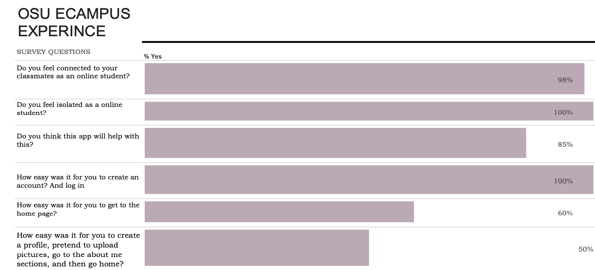

Project Overview
Student PeerNest is a research driven design and development project focused on helping online, commuter, and nontraditional students connect with nearby classmates for study groups, accountability, and collaboration. The project explores how thoughtful interaction design, clear navigation, and community focused features can help reduce isolation in remote and nontraditional learning environments.
This project originally started as a Figma prototype called StudyBuddy and later evolved into Student PeerNest, a live React web application. The updated version keeps the same goal of helping students connect, but the name and design direction were refined to better support online, commuter, and nontraditional students.
Key Prototypes
These screens represent the core user journey, including discovering classmates, viewing the home feed, and communicating through messaging. The prototypes emphasize clarity, consistency, and ease of navigation.


Interactive Prototype
This interactive prototype demonstrates the primary navigation flow across key areas of the application, including the Feed, Discovery page, Messaging, and Profile. It is intended to communicate interaction patterns and overall usability rather than full system functionality.
View interactive prototypeLive Web Application
Student PeerNest was later developed into a live web application using React, Vite, React Router, custom CSS, React Icons, Google Fonts, Express, GitHub, and Vercel. The live app includes a public homepage, About page, demo login, Discovery dashboard, Feed, Messenger, and Profile pages.
The login feature is currently a demo feature and does not create real accounts, store passwords, or authenticate users yet. The purpose of the current version is to show the product direction, interface design, routing, frontend structure, backend communication, and deployment.
View live Student PeerNest app View source code on GitHubUser Research and Surveys
To better understand the experiences of online students, I designed and distributed a survey through the OSU Ecampus Facebook group. The survey explored feelings of connection, challenges related to isolation, and current approaches to forming study groups.
Findings revealed consistent pain points around limited peer interaction and difficulty building community, which directly informed layout, navigation, and feature prioritization decisions.
Wireframes
Low fidelity wireframes were created to define structure, layout, and user flow prior to high fidelity prototyping. These wireframes helped validate information architecture and screen hierarchy early in the design process.


UX Metrics
Participant feedback highlighted strong interest in the concept while also identifying opportunities to improve navigation clarity and visual hierarchy. These insights reinforced the importance of clear entry points and consistent interaction patterns.

Key Learnings
This project strengthened my ability to connect research insights with design and development decisions. It reinforced the value of grounding interface choices in real user needs while also considering technical feasibility, accessibility, and deployment.
Next Steps
Future work would include expanded usability testing, real authentication, student profile creation, database connected profile data, working message requests, and stronger privacy and safety features such as blocking, reporting, and account deletion.